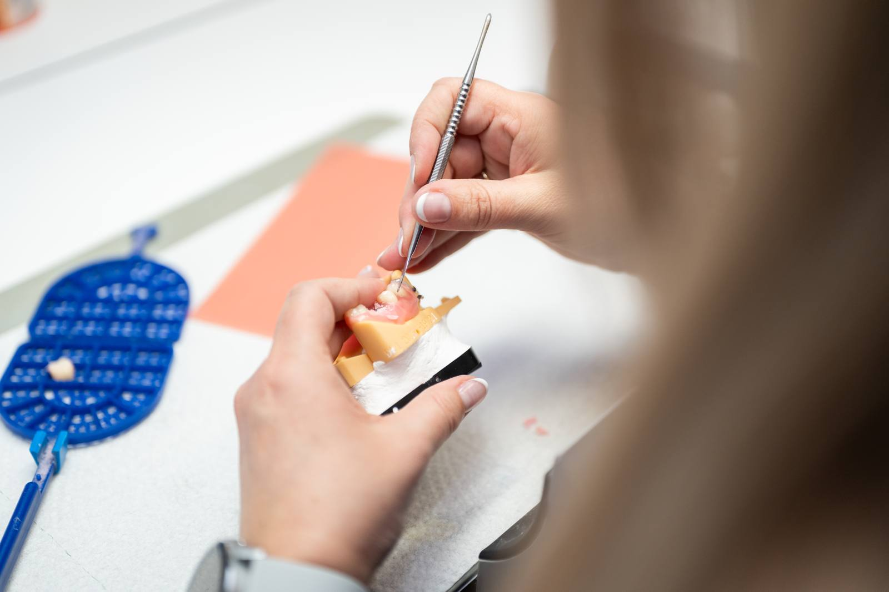
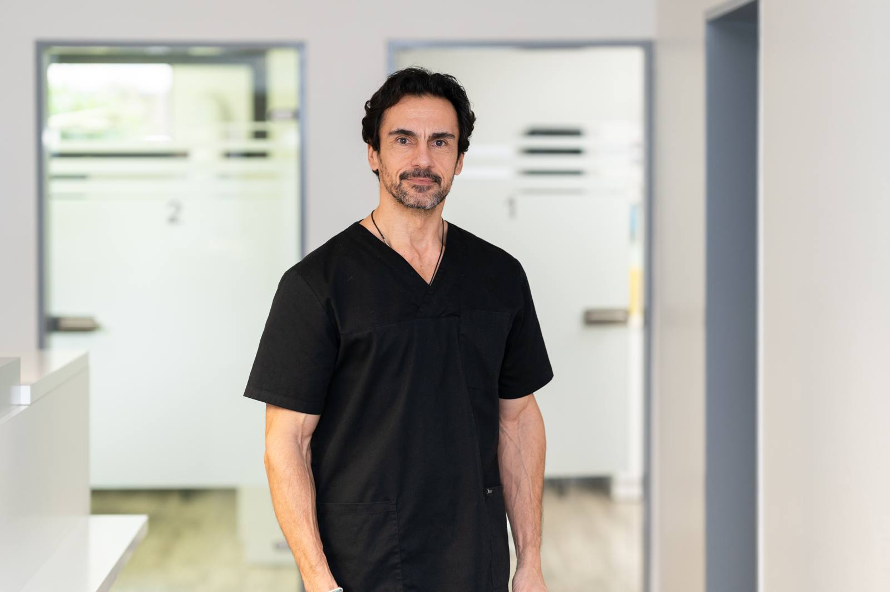
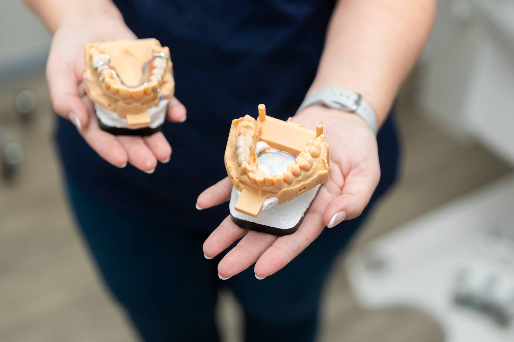
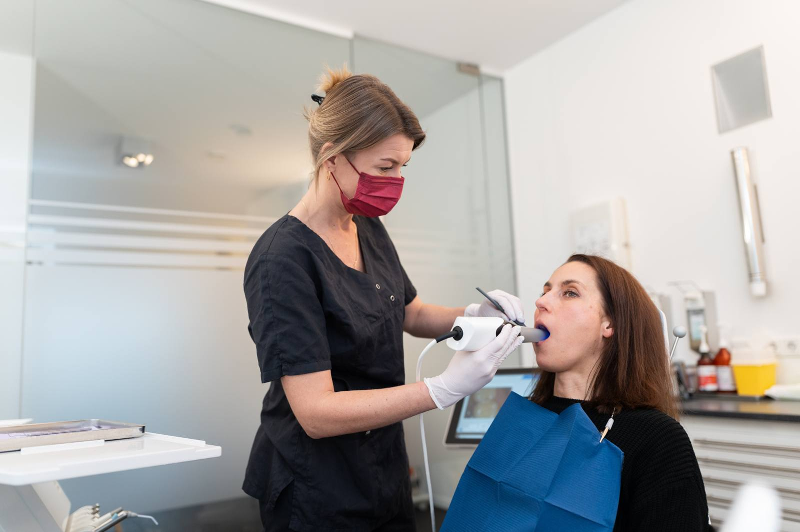
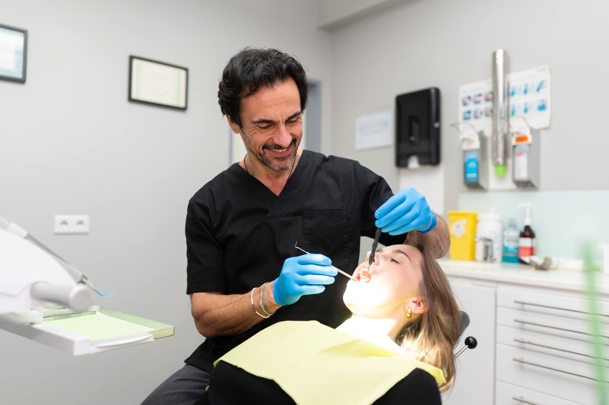

Zahnimplantate ersetzen fehlende Zähne so, dass sich das Ergebnis anfühlt und aussieht wie eigene Zähne – fest verankert und ohne Eingriff an gesunden Nachbarzähnen.

Bei einzelnen fehlenden Zähnen, größeren Lücken oder als stabiler Halt für Prothesen.
Bewährte Titan-Implantate – auf Wunsch auch metallfreie Lösungen.
Festzuschuss der Kasse zum Zahnersatz; die Implantation ist eine private Leistung mit transparentem Heil- und Kostenplan.
Ein Zahnimplantat ist eine künstliche Zahnwurzel, die anstelle des verlorenen Zahns im Kieferknochen verankert wird. Auf diesem Pfosten befestigen wir später den sichtbaren Zahnersatz – eine Krone, eine Brücke oder eine Prothese, die dadurch spürbar sicherer sitzt. Das Wirkprinzip beruht auf der Osseointegration: Der Knochen wächst in den ersten Wochen direkt an die Implantatoberfläche heran und hält sie belastbar fest.
Verwendet werden meist Implantate aus Titan, einem seit Jahrzehnten bewährten und gut verträglichen Material. Für Patientinnen und Patienten, die eine metallfreie Versorgung wünschen, sind auch Implantate aus Keramik möglich. Der Unterschied zu anderen Lösungen liegt in der Substanzschonung: Eine klassische Brücke verlangt, dass die Nachbarzähne beschliffen werden, obwohl sie gesund sind. Ein Implantat kommt ohne diesen Eingriff aus und belastet den Knochen dort weiter, wo der Zahn gefehlt hat – das hilft, den Kiefer zu erhalten. In der Salierpraxis ist die Implantologie ein Schwerpunkt von Dr. med. dent. Patrick Ilbag.
Vor einer Implantation müssen Zahnfleisch und Restzähne entzündungsfrei sein; eine bestehende Parodontitis behandeln wir zuerst. Bei zu geringem Knochenangebot ist ein Aufbau nötig oder eine andere Lösung sinnvoller. Auch Rauchen, ein schlecht eingestellter Diabetes, bestimmte Medikamente und ein noch nicht abgeschlossenes Kieferwachstum sprechen gegen oder für einen späteren Zeitpunkt – das klären wir im Vorgespräch offen mit Ihnen.

Salierpraxis Düsseldorf
Salierpraxis Kempen
Implantate helfen, den Kieferknochen zu erhalten, und verhindern, dass Nachbarzähne kippen oder wandern – das beugt auch Fehlbelastungen des Kiefergelenks vor. Wie lange ein Implantat hält, hängt vor allem von der Pflege ab: Auch um Implantate herum kann sich das Gewebe entzünden (Periimplantitis). Regelmäßige Kontrollen und eine professionelle Zahnreinigung sind daher fester Teil der Nachsorge. Rauchen verschlechtert die Aussichten messbar. Implantiert wird an beiden Standorten, in Düsseldorf-Oberkassel und in Kempen.
Jede Behandlung wird individuell auf Ihren Befund abgestimmt.
Wir prüfen Zähne, Zahnfleisch und Knochenangebot und besprechen, ob ein Implantat für Sie in Frage kommt. Dazu gehören Röntgenaufnahmen und ein Blick auf Vorerkrankungen und Medikamente.
Implantatposition und späterer Zahnersatz werden gemeinsam geplant, denn die Position richtet sich nach dem gewünschten Ergebnis. Sie erhalten dabei einen Heil- und Kostenplan und wissen, welche Schritte auf Sie zukommen.
Das Implantat wird in örtlicher Betäubung präzise in den Kieferknochen eingesetzt – auf Wunsch begleitet von einer Lachgassedierung oder in Vollnarkose. Der Eingriff ist geplant und ruhig; die meisten Patienten sind überrascht, wie unspektakulär er verläuft.
Das Implantat verwächst über einige Wochen bis Monate fest mit dem Knochen. In dieser Zeit versorgen wir die Lücke bei Bedarf mit einem Provisorium, sodass Sie nicht mit einer sichtbaren Lücke leben müssen.
Der endgültige Zahnersatz wird abgeformt, im Meisterlabor gefertigt und auf dem Implantat befestigt. Anschließend prüfen wir Sitz, Biss und Reinigungsmöglichkeit und vereinbaren die Kontrolltermine.
Dauer der Eingriff meist etwa 30 bis 60 Minuten pro Implantat, die Gesamtbehandlung je nach Befund einige Monate
Gesunde Nachbarzähne bleiben unberührt und müssen nicht beschliffen werden
Der Kieferknochen wird weiter belastet, was dem Abbau nach Zahnverlust entgegenwirkt
Kronen und Brücken auf Implantaten sitzen fest; Prothesen halten deutlich sicherer
Kauen, Beißen und Sprechen fühlen sich nach der Einheilung wieder natürlich an
Nachbarzähne können nicht in die Lücke kippen oder wandern
Gesetzliche Krankenkassen zahlen einen befundbezogenen Festzuschuss zum Zahnersatz, also zur Krone oder Prothese auf dem Implantat. Die Implantation selbst und begleitende Maßnahmen wie ein Knochenaufbau sind in der Regel private Leistungen. Ein lückenlos geführtes Bonusheft erhöht den Zuschuss. Privat Versicherte erhalten je nach Tarif einen Teil oder die Gesamtkosten erstattet; eine Zahnzusatzversicherung kann den Eigenanteil ebenfalls senken. Sie bekommen vor Behandlungsbeginn einen schriftlichen Heil- und Kostenplan, den Sie bei Ihrer Kasse oder Versicherung einreichen können. Auf Wunsch stellen wir Ihnen mehrere Versorgungsvarianten mit den jeweiligen Kosten gegenüber, damit Sie in Ruhe entscheiden können.
Die Angaben sind allgemeine Hinweise. Was in Ihrem Fall übernommen wird, hängt vom Befund und Ihrem Versicherungsschutz ab – wir beraten Sie persönlich und halten alles schriftlich fest.
Ist Ihre Frage nicht dabei? Rufen Sie uns gern an – wir nehmen uns Zeit.
Das Einsetzen eines Implantats ist durch die örtliche Betäubung schmerzfrei – Sie spüren Druck und Bewegung, aber keinen Schmerz. In den Tagen danach kann der Bereich druckempfindlich sein oder leicht anschwellen; kühlen und ein leichtes Schmerzmittel genügen meist. Wer sehr angespannt ist, kann den Eingriff mit Lachgas oder in Vollnarkose durchführen lassen.
Ein Zahnimplantat kann bei guter Pflege viele Jahre bis Jahrzehnte halten – eine Garantie gibt es jedoch nicht. Entscheidend sind entzündungsfreies Zahnfleisch, regelmäßige Kontrollen, eine professionelle Zahnreinigung und der Verzicht auf Rauchen. Auch nächtliches Knirschen kann Implantate überlasten; in diesem Fall schützt eine Aufbissschiene die Versorgung.
Vom Eingriff bis zum endgültigen Zahnersatz dauert es in der Regel einige Wochen bis Monate, weil das Implantat mit dem Knochen verwachsen muss. Die genaue Zeit hängt von Knochenqualität, Lage und Umfang der Versorgung ab. Sichtbare Lücken überbrücken wir in der Zwischenzeit mit einem Provisorium, sodass Sie nicht darauf warten müssen.
Fehlt Knochen, lässt er sich in vielen Fällen aufbauen – etwa mit körpereigenem Knochen oder mit Knochenersatzmaterial. Ob das nötig ist, zeigt die Voruntersuchung mit Röntgenaufnahme. Manchmal ist auch ein kürzeres oder anders positioniertes Implantat möglich. Reicht das nicht aus, besprechen wir mit Ihnen Alternativen wie eine Brücke oder eine herausnehmbare Versorgung.
Implantieren lässt sich erst, wenn das Zahnfleisch entzündungsfrei ist – eine bestehende Parodontitis wird vorher behandelt. Der Grund: Dieselben Bakterien können auch das Gewebe um ein Implantat angreifen und es langfristig lockern. Nach erfolgreicher Parodontitistherapie und mit konsequenter Nachsorge ist eine Implantation in vielen Fällen gut möglich.

Auf dem Implantat sitzt am Ende immer eine Krone, Brücke oder Prothese – hier erfahren Sie, welche Varianten es gibt.
Mehr erfahren
Gesundes Zahnfleisch ist die Voraussetzung für ein Implantat, das lange hält.
Mehr erfahren
Wer mehrere Implantate in einer Sitzung setzen lassen möchte oder große Angst hat, kann den Eingriff im Schlaf durchführen lassen.
Mehr erfahrenHaben Sie Fragen zu dieser Behandlung? Wir laden Sie herzlich zu einem persönlichen Gespräch ein.
Termin vereinbaren